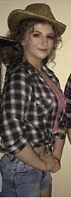

Core Dancers
Core Dancers:
Jodie Mulcahy(Dance Captain), Kayla McAvinney, Aine McDonald, Lucy Coen, Erika Nesbit, Emma Dolan, Cara Comiskey, Megan Smith, Sorcha Finan, Briana Smith,Sian Gear, Sian Tobin, Katie Briody, Ciara Kellegher, Ellen O'Brien,Lucille Carolan, Lauren Carter,Rosina Cooley, Gintare Sereckyte, Kasia Dabrowska, Blathnaid O'Reilly, Katlyn Pierce, Abbie Carter,Brendan,Stuart Elliott.
| 
| Interview with the Dance Captain Jodie Mulcahy:
In an interview with dance captain Jodie Mulcahy she told us all about her role as being dance captain and being involved in this musical production. She told us that there was one audition for the core dancers. Over 90 boys and girls audition for the dance group but only around 25 got the oppurtunity to be a core dancer.Jodie was later picked as the dance captain as she is not only a leader but an exceptional dancer as well. At first Jodie thought it was a joke when she was first picked as dance captain but was then very grearful for this role.The core dancers had five different dances throughout the show Jodie told us. They feature in 'Footloose(Opening)','Holding out for a hero','Still rocking', 'Let's here it for the boy' and 'Footloose(Finale)'. The core dancers had around three hours of practice a week. The choreography Roisin Walsch was described as a "Queen" by Jodie. We got our work done but also had a great time said Jodie.Footloose the musical was preformed over 3 different nights.It was an amazing experience that I really enjoyed said dance captain Jodie. |